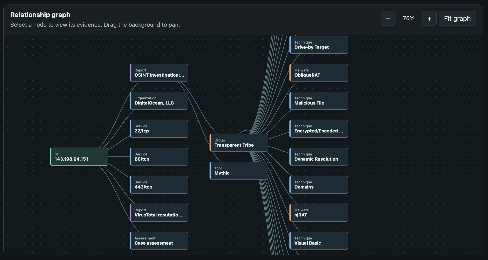

Threat intelligence with confidence you can audit.
OpenInvestigation pulls public evidence on IOCs, actors, malware, campaigns and financial-fraud indicators — crypto wallets, PIX keys and accounts — from 35+ graded sources, grades every claim on the Admiralty scale, and derives a 0–5 confidence in code — capped by how many independent origins agree. The model writes the assessment; it never sets the score.
$ git clone https://github.com/V1n1v131r4/OpenInvestigation.git $ cd OpenInvestigation $ docker compose up --build -d # open http://127.0.0.1:8080

Sources
35+ sources, and you control what leaves the box
Every source is classed by what it does to your indicator. The per-case TLP decides which classes run, and a query log records exactly what each one received.
On your machine
No request leaves the host. Your own corpus, prior work, and offline validation.
Downloaded, matched offline
Feeds are fetched whole, then matched locally — the seed is never sent to a third party.
Send the indicator out
These query a third party with your seed, so each is opt-in per case and written to the query log.
Where an indicator surfaces
Hidden-service and paste/leak indexes, searched over clearnet — we never fetch .onion directly, and never download the leaked data.
Each collector has typed errors and response-size limits, and all collected text is treated as untrusted. Add provider keys to a local .env to light up the authenticated sources — all optional.
Financial fraud & dark web
Follow the money — wallets, PIX, and where they surface
The same graded pipeline now tracks financial-fraud actors. Crypto has strong open attribution; fiat is weaker by nature, and the tool is honest about the difference.
Crypto wallets, globally
A wallet is matched offline against the OFAC SDN sanctions list and the Ransomwhere ransom-payment dataset, screened for community scam reports on Chainabuse, and enriched with balance, transaction count and first-seen from mempool.space and Etherscan. BTC, ETH/EVM, Monero and Tron auto-detect; wallet: forces any chain.
Brazilian fiat, validated offline
pix:, iban: and conta: seeds are validated on the host — CPF/CNPJ check digits, IBAN mod-97, PIX key-type — with nothing sent out. There is no open bulk feed of fraudulent PIX keys (the Central Bank's fraud marking is a per-key, access-controlled lookup), so fiat yields validation plus low-reliability scam-report mentions, never a "this is fraud" verdict. CPF, phone and email are personal data — handle accordingly.
Dark web, over clearnet
Hidden-service mentions are reached without Tor — Ahmia full-text search (CSAM-filtered) and the RansomLook leak-site tracker, with optional IntelX — and a curated dork pack sweeps pastes, Telegram and dumps. These surface where an indicator appears; OpenInvestigation never fetches .onion directly and never redistributes leaked data. Like every outbound source, they are opt-in and gated by the case TLP.
Grading & confidence
Every claim carries a grade. The score is math, not vibes.
OpenInvestigation speaks the Admiralty System, then turns those grades into a 0–5 confidence with a pure, reviewable function — capped by independence so a single well-cited source can't masquerade as consensus.
Reliability — the source
A (completely reliable) → F (cannot be judged). The shipped table is deliberately conservative: unknown sources default to F.
Credibility — this claim
1 (confirmed) → 6 (cannot be judged), derived in code from each item's qualifier.
The 0–5 score is computed by a pure function and ships with its reasons. Independent clusters — not raw hit count — set the ceiling.
- 5Confirmed consensus. Two or more independent clusters with confirmed (credibility 1) evidence.
- 4Corroborated. Two or more independent clusters with high-credibility (1–2) evidence.
- 3Supported. Independent corroboration, but nothing high-credibility — ceiling 3.
- 2Single origin. One independent cluster, no corroboration — ceiling 2.
- 0Unassessed. No independent evidence to judge.
Republished text collapses into one cluster via simhash, so a story quoted ten times still counts once. IP and domain sightings decay over time — an old hit is weaker evidence of current use.
LLM assessment
The model writes the report — not the verdict
When the TLP allows it, a model turns the graded evidence into an analyst-ready assessment. It is kept on a short leash: grounded in real citations, structured as competing hypotheses, and never allowed to move the number.
Grounded in evidence
Every narrative and claim must cite evidence IDs that actually exist in the case. Hallucinated IDs are dropped, and an assessment with no real citation is rejected outright.
Competing hypotheses
Output is structured ACH-style: a rationale, key claims with their supporting evidence, and competing hypotheses each tagged with supporting, contradicting and contextual items.
The code keeps the score
The model's own confidence is advisory: it's clamped to 0–5 and the code score stays authoritative. The prose is length-limited and sanitized before it's shown.
Your provider, your keys
OpenAI or Anthropic, called directly over HTTPS with keys from your local .env. No bundled model, no Node, no third-party agent in the loop.
Degrades safely
Under RED and AMBER the hosted model doesn't run at all. If the model is unavailable or ungrounded, the code-generated parecer still stands in.
Export what you trust
A relationship graph, STIX 2.1 export, and local SHA-256 snapshots of verified pages — citations lead back to the original source.
How it works
From a seed to an auditable case
Seed
Enter IOCs, CVEs, ASNs, CIDRs, hashes, crypto wallets, PIX keys, IBANs, or actor names. Defanged input (hxxp, [.]) is normalized and the original is kept.
Collect under policy
The case's TLP decides which source classes run and whether the seed may leave the host. Every outbound query is logged.
Grade & correlate
Evidence is clustered into independent origins, graded with Admiralty reliability and credibility, decayed over time, and filtered for shared infrastructure.
Score & assess
Code computes the 0–5 confidence and its reasons. When the TLP allows, a model writes the narrative and competing hypotheses — never the score.
Review & export
Confirm or reject evidence, open the local snapshot of a verified page, and export the case as JSON or STIX 2.1.
Quickstart
Running in two minutes
You need Docker with Docker Compose. Everything else is optional.
$ git clone https://github.com/V1n1v131r4/OpenInvestigation.git $ cd OpenInvestigation $ docker compose up --build -d # then open http://127.0.0.1:8080
Add provider keys (OpenAI or Anthropic for the assessment; VirusTotal, Shodan, GreyNoise, Censys and more for extra sources) to a local .env. Set OSINT_WEB=0 to run with no external collection at all.
Investigate threats on your terms.
Open source, self-hosted, and transparent about every request it makes and every grade it assigns.